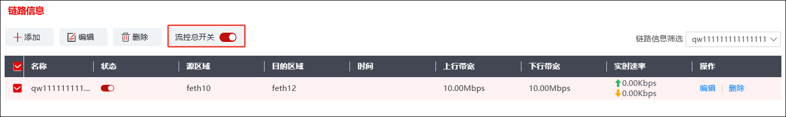
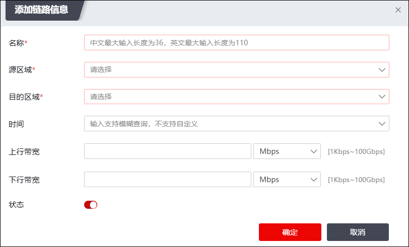
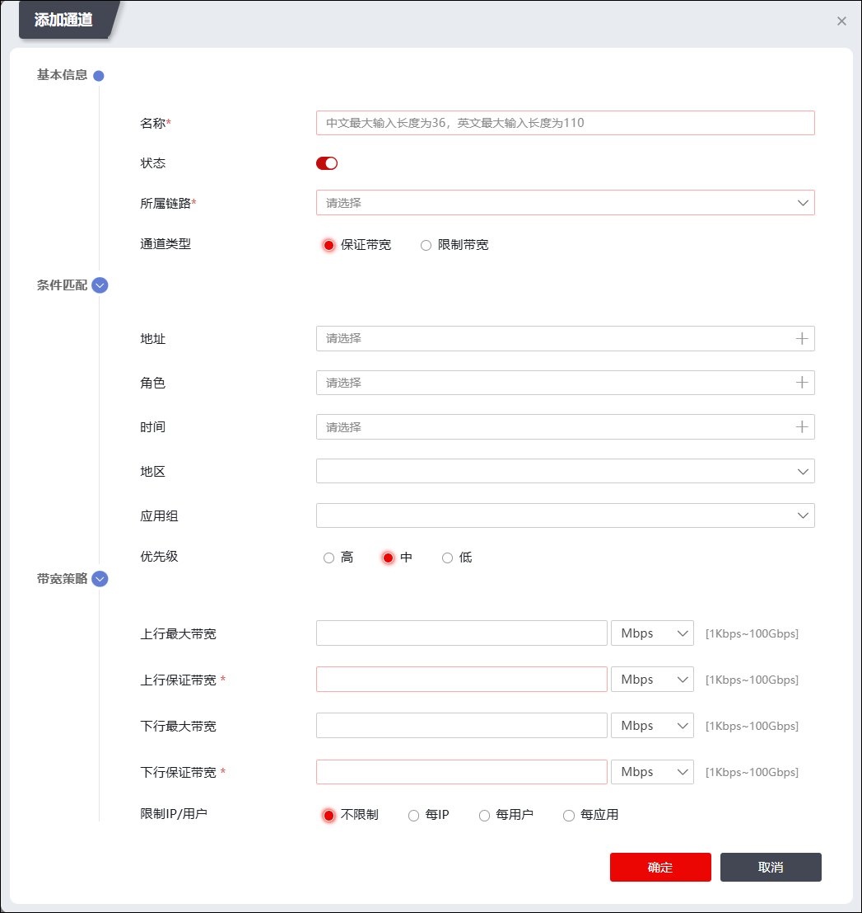

配置流量策略的具体操作如下：
| 步骤1 | 选择 ，开启流控总开关，如下图所示。 |

| 步骤2 | 配置虚拟链路。 |
支持在两个区域之间设置多条虚拟链路，以便不同时间段调用不同的流量控制策略。配置前首先需要打开“流控总开关”，否则接下来的配置将不会生效。
1）点击“链路信息”模块中的“ ”，弹出“添加链路信息”对话框，如下图所示。
”，弹出“添加链路信息”对话框，如下图所示。

在设置虚拟链路时，各项参数的具体说明如下表所示。
参数 |
说明 |
|---|---|
名称 |
必填项，设置虚拟链路的名称。长度范围：1-110字符。 |
源区域 |
必选项，设置虚拟链路对应的上行区域。点击下拉列表选择已设置好的区域，或者点击『添加区域』，新建区域，关于区域的配置具体请参见 区域。 |
目的区域 |
必选项，设置虚拟链路对应的下行区域。点击下拉列表选择已设置好的区域，或者点击『添加区域』，新建区域，关于区域的配置具体请参见 区域。 |
时间 |
设置虚拟链路带宽限制的应用时间。点击下拉列表选择已设置好的时间对象，或者点击『添加...』，新建各类时间对象，关于时间对象的配置具体请参见 时间。 |
上行带宽 |
设置虚拟链路的上行带宽，取值范围为1k-100G，单位为Gbps、Mbps、Kbps；默认不限制上行带宽。 |
下行带宽 |
设置虚拟链路的下行带宽，取值范围为1k-100G，单位为Gbps、Mbps、Kbps；默认不限制下行带宽。 |
状态 |
点击图标，开启虚拟链路配置信息。 |
2）配置完成后，点击【确定】按钮，完成虚拟链路的创建。
| 步骤3 | 配置虚拟通道。 |
1）设置虚拟通道基本信息。点击“通道信息”模块的“”，添加新的虚拟通道，如下图所示。

在设置虚拟通道基本信息时，各项参数的具体说明如下表所示。
参数 |
说明 |
|---|---|
名称 |
必填项，设置虚拟通道的名称。 |
状态 |
设置虚拟通道的流量控制策略是否生效。 |
所属链路 |
必选项，点击下拉列表选择虚拟通道所属的虚拟链路。 |
通道类型 |
设置虚拟通道的类型。可选项：保证带宽和限制带宽。 1）限制带宽：只限制虚拟通道的最大带宽。 2）保证带宽：可限制虚拟通道的最大带宽，还可保证通道的最低可用带宽。 |
地址 |
设置流量控制生效地址范围。点击『选择』，选择已设置好的地址范围，或者点击『添加』，新建地址范围，关于地址对象的配置具体请参见 地址。 |
角色 |
设置流量控制生效角色范围。点击『选择』，选择已设置好的角色范围，或者点击『添加』，新建角色，关于角色对象的配置具体请参见 角色控制。 |
服务 |
设置流量控制生效服务范围。点击『选择』，选择已设置好的服务范围，或者点击『添加』，新建服务，关于服务对象的配置具体请参见 服务。 |
时间 |
设置流量控制生效时间范围。点击『选择』选择已设置好的时间范围，或者点击『添加』，新建时间，关于时间对象的配置具体请参见 时间。 |
地区 |
设置流量控制生效的地区范围。点击『选择』选择已设置好的地区范围，或者点击『添加』，新建地区，关于地区对象的配置具体请参见 地区。 |
应用组 |
设置流量控制生效应用范围。在下拉框中点击『添加』，新建应用对象，关于应用对象的配置具体请参见 应用。 |
优先级 |
设置虚拟通道的优先级，可选项：高、中和低。 说明： 在同一虚拟链路中有多个虚拟通道时，如果流量大于保证带宽且小于最大带宽，那么这部分流量将会与其它虚拟通道中同类型的流量竞争带宽资源；优先级越高，就会更优先获得剩余的带宽资源。 |
上行 |
设置虚拟通道上行链路的最大带宽和保证带宽，单位为Gbps、Mbps、Kbps。 1）最大带宽：可选项，如果不设置该选项，最大带宽默认取值和虚拟链路最大带宽保持一致； 2）保证带宽：在通道类型配置为保证带宽时，该选项为必选配置。 说明： 1）保证带宽的取值不能大于最大带宽。 2）在同一虚拟链路下可配置多个虚拟通道，但通道上行最大带宽总和不能超过虚拟链路的上行带宽。 |
下行 |
设置虚拟通道下行链路的最大带宽和保证带宽，单位为Gbps、Mbps、Kbps。 1）最大带宽：可选项，取值范围为1-1000，如果不设置该选项，最大带宽默认取值和虚拟链路最大带宽保持一致； 2）保证带宽：在通道类型配置为保证带宽时，该选项为必选配置。 说明： 1）保证带宽的取值不能大于最大带宽。 2）在同一虚拟链路下可配置多个虚拟通道，但通道下行最大带宽总和不能超过虚拟链路的下行带宽。 |
限制IP/用户 |
在虚拟通道内的流量进行细化管理，可以限制每个IP或者每个用户的上行带宽和下行带宽。可选项：不限制、每IP、每用户和每应用。 1）不限制：不对通道内的IP或者用户流量进行限速。 2）每IP：基于IP地址的流量进行限速。此时需要设置每个目的IP地址的上行限制带宽和下行限制带宽，注意每个IP地址的上行限制带宽不能超过虚拟通道的上行限制带宽，每个IP地址的下行限制带宽不能超过虚拟通道的下行限制带宽。 3）每用户：基于用户的流量进行限速。此时需要设置每个用户的上行限制带宽和下行限制带宽，注意每个用户的上行限制带宽不能超过虚拟通道的上行限制带宽，每个用户的下行限制带宽不能超过虚拟通道的下行限制带宽。 4）每应用：基于应用的流量进行限速。此时需要设置每个应用的上行限制带宽和下行限制带宽，注意每个应用的上行限制带宽不能超过虚拟通道的上行限制带宽，每个应用的下行限制带宽不能超过虚拟通道的下行限制带宽。 |
2）配置完成后，点击【确定】按钮，完成虚拟通道的高级信息配置。
| 步骤4 | 配置虚拟子通道。 |
点击通道信息模块的“”，在弹出的“添加”对话框中，配置虚拟子通道信息。
虚拟子通道的配置过程类似于虚拟通道，虚拟通道的基础信息页签中的“所属通道”选项可点击下拉列表来选择虚拟子通道所属的虚拟通道，其余配置过程均与虚拟通道的配置类似。
虚拟子通道下还可设置子通道，包括虚拟链路最高支持叠加5层。NGFW支持的虚拟通道（包括子通道）个数受license控制。